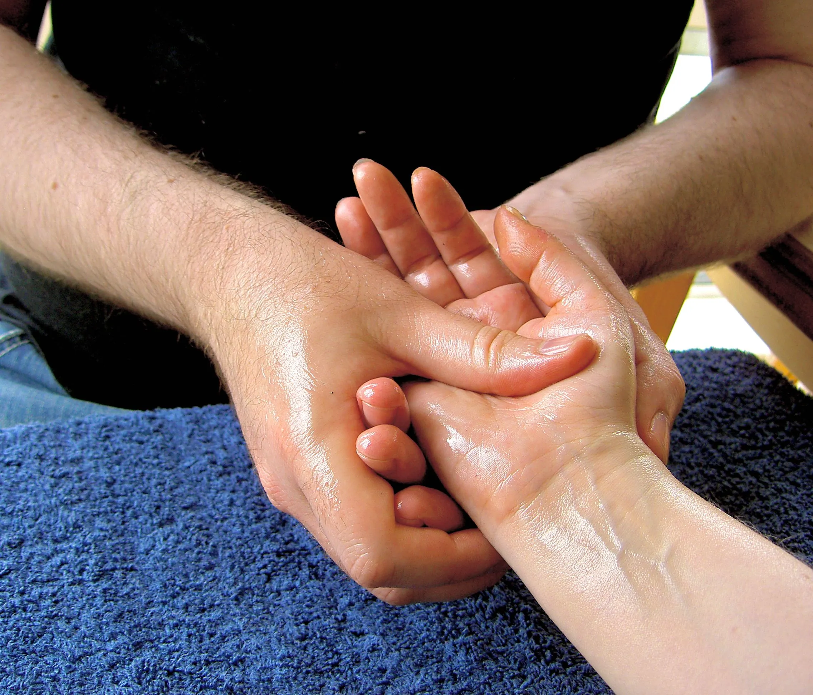
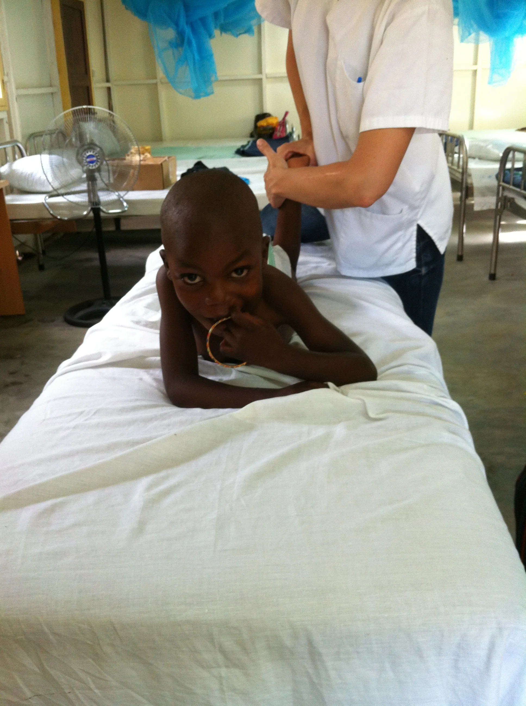

A gentle technique. A precise signal. A nervous system that does the rest.
Bowen therapy is a gentle, non-invasive technique that helps the body heal itself — addressing musculoskeletal pain, chronic conditions, and stress-related issues.
How it works
Using light rolling movements over muscles and connective tissue, Bowen therapy stimulates the nervous system, encourages relaxation, improves circulation, and supports the body's own ability to restore balance.
It's a holistic approach — well suited to anyone looking for a safe, sustainable alternative to more invasive conventional treatments.

What it's used for
- Back and neck pain — through gentle release rather than force.
- Joint discomfort — supporting mobility without invasive treatment.
- Headaches and TMJ disorders — often linked to nervous-system tension.
- Recovery from injury — working alongside the body's own repair process.
- Chronic stress — by shifting the nervous system out of a constant "on" state.
Why we teach it here
Bowen doesn't need a clinic full of equipment, and it doesn't take years to learn safely and well. That's exactly why it works as a foundation for community-based care: a practitioner trained in their own neighbourhood can treat their own neighbours, with nothing more than their hands and a proper apprenticeship behind them.
See how we train practitioners
The beauty of Bowen
The beauty of Bowen is its simplicity. You only need your hands, knowledge of the modality, and an understanding of anatomy and physiology.
Bowen is a portable skill — easily accessible, and beneficial to communities that lack resources. In addition, it can provide the possibility of a dignified livelihood and community service.
The next five years (2027 – 2032)
Over the next five years, JAS Foundation will simultaneously consolidate and expand its operations and programmes across the Western Cape Province. The Foundation is working to develop a scalable model, which we can roll out in communities across South Africa. The model should be: community driven, increase access to social and community services, and contribute to job-creation.
To this end, the key components of the Foundation's work in the coming years are:
Training courses
Each year, the 'Hands of Change' training programme aims to deliver several courses concurrently: Bowen Practitioner (foundation course), Bowen Advanced, Bowen Masters, and Bowen Instructors. Trainees are supported through mentorship and personal development coaching. Other healing modalities to be offered include scar work and trauma release. By 2032, the Foundation also intends to offer training courses in the rural Western Cape.
Clinics
JAS Foundation clinics will be established in communities across the Western Cape, operated and managed by our trainees and practitioners — teaching clinics, community clinics, and private clinics.
Teaching Clinic. Similar to a teaching hospital: trainees and practitioners practice under supervision while they learn, and the clinic is open to all. There is currently one in Athlone, and a second is scheduled to open in Khayelitsha during 2027.
Community Clinic. Set up by JAS Foundation trainees, to do community service in their respective communities, offering Bowen therapy to people in need.
Private Clinic. Two types: private practices set up by qualified JAS Foundation practitioners; and private clinics established by the Foundation to serve clients who can pay for treatment. This helps the Foundation raise funds to cross-subsidise the Hands of Change training programme — and provides a space for qualified practitioners who don't yet have the space or resources to open their own practice. The first Private Clinic is planned to open in Wynberg during 2027.
Research
In the last 100 years we have seen major innovation and technological advance, which provides an opportunity to improve our health and healing treatment and services. There is currently insufficient scientific research and data on the Bowen Technique and its impact. In the next ten years, the Foundation wants to develop a research programme — using innovation and technology to document, learn, and contribute to the body of scientific knowledge on restorative medicine and healing modalities.